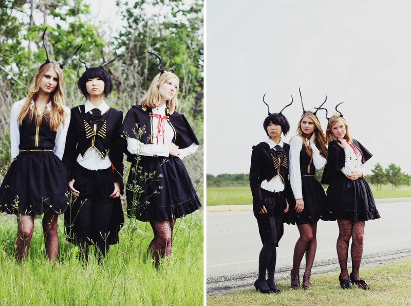
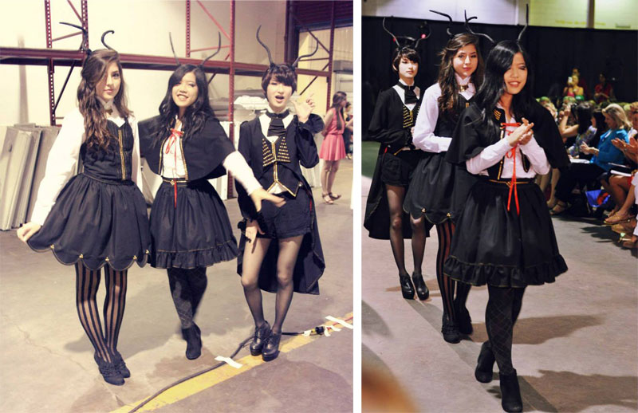

In Spring 2013, I applied to be a designer in Fashion Care: Paint it Red, an organization that donates to The American Heart Association to raise funding for research and awareness for heart disease in women. I created an entire collection with small accents of red to represent the cause I was working for. The collection was shown twice, once at Fashion Cares: Paint it Red, and a second time at The Contemporary Museum of Houston's Fashion Meltdown. It was worn one last time for a photoshoot in the woods before the pieces were cleaned and sold.
Overview of Collection
The Dark Deer Collection includes seven pieces; one coat, one undervest, a jabot, two skirts, one caplet and a corset-laced vest. Three antler headbands were made. Models supplied their own white shirts, black patterned stockings, and appropriate shoes.
 